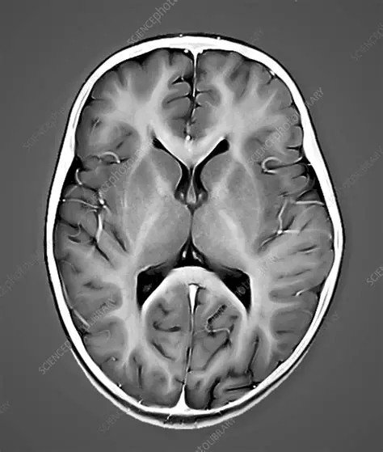

Spatial Transcriptomics Explorer
Explore how scientists use coding, data, and biology to understand the brain. Launch an interactive notebook and investigate real biological data directly in Google Colab.

📋 Before You Begin
Before opening any of the notebooks, please read the activity instructions carefully. The guide explains how to use the notebooks, expectations for classroom participation, and important information that will help you get the most out of the experience.
Please read these instructions first before starting the Spatial Transcriptomics activities.
Read InstructionsTranscriptomics Guide
Learn the basics of computational biology and discover how researchers analyze gene expression across thousands of cells.
Launch NotebookClassroom Playground
Experiment with code, explore biological data, and try hands-on activities. If this is your first experience with biological datasets, Enjoy!!!
Open in ColabOffline Version
Are too many people on Colab and It's not running now? Is it slow or offline? Open This File to look at images.
Open Local Version